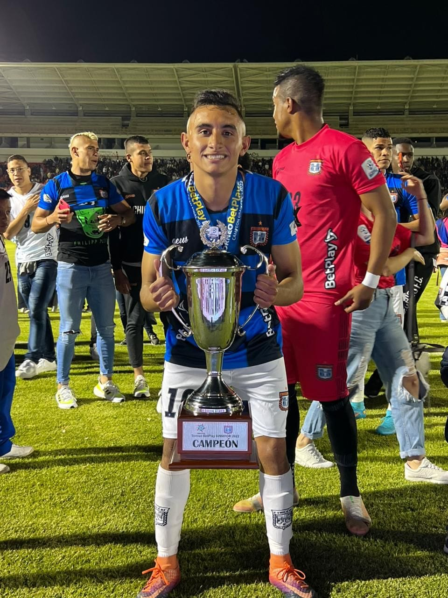
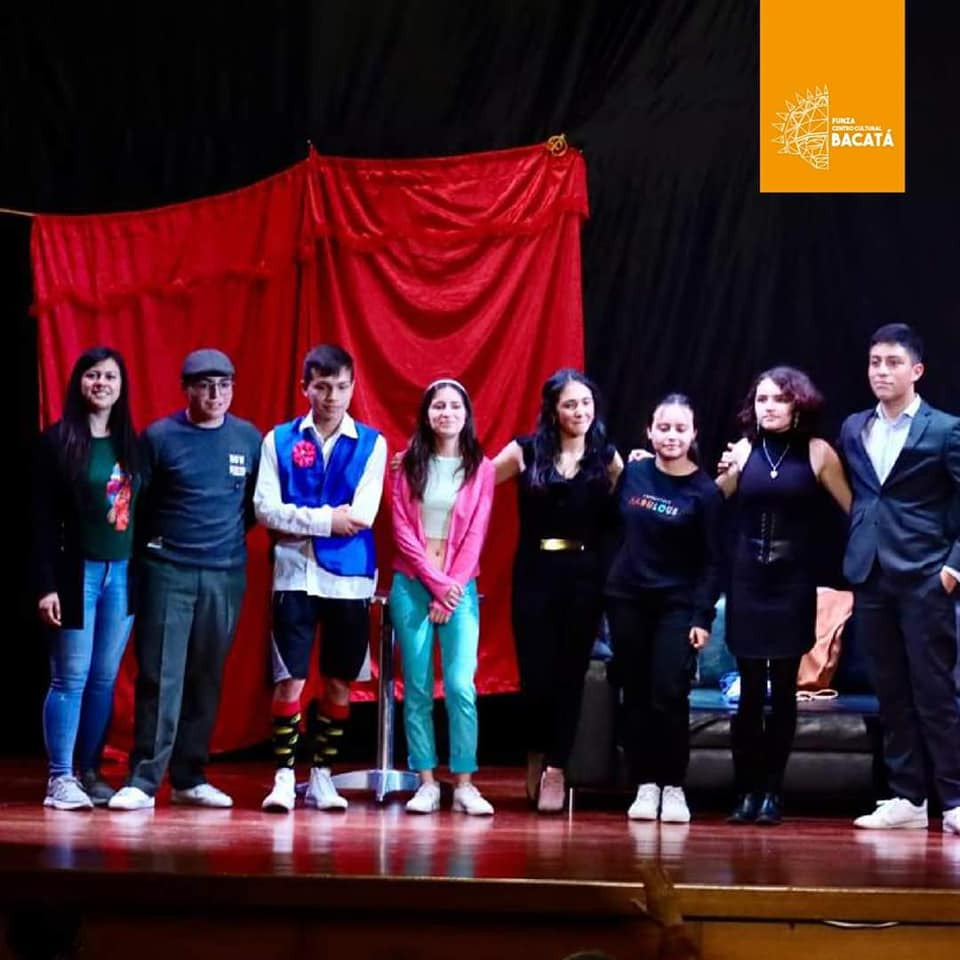
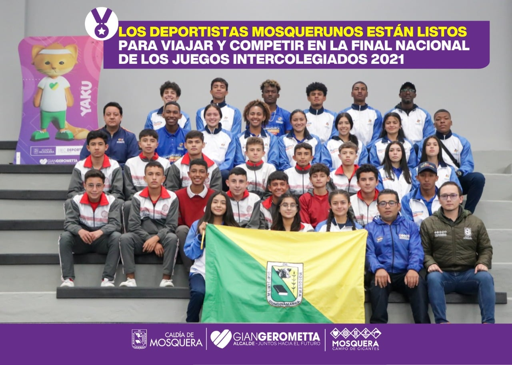

Esta imagen fue realizada en conmemoracion de los 34 años del instituto, repasando la historia de este mismo, ya que en esos tiempo todo surguio como una propuesta, la que desoues se paso como unv proyecto de Ferdinand Sarmiento el cual despues de muchoa años de lucha y dedicacion logro crear lo que ahora es una de las instituciones mas reconocidad a nivel cundinamarca y a nivel nacional, aunque este ya no siga con nosotros el ahora rector y representante legal del instituto Javier Ignacio Franco Vargas hace mucho tiempo lo conmemoro haciendo un lugar especial con el nombre del creador del instituto lo cual seria un cuarto amplio el cual se usa para actos especiales haciendo que este icono siga en nuestras memorias

Este jugador del club profesional boyaca chico, fue egresado de la institucion de Albert Einstein la cual siempre se caracterizo y seguramente en un futuro se va a caracterizar por su amplio campo deportivo que abarca mas de una disiplina, ya que hay que recordar que este instituto ha dejado grandes huella a nivel nacional lo que seria tanto el futbol 11 y futsal, tambien se ha destacado el el basketball y voleibol volviendo a esta institucion muy reconocida a nivel cundinamarca, tambien hay que recordar que esta institucion cuenta con un club deportivo externo el cual tambien es reconocido por su gran nivel y dejar huellas tanto a nivel nacional como a nivel insternacional participando en torneos en toda suramenrica como lo podria ser la conquista de la cat 2008 en Arequipa, Peru
En este año 2023 se vienen nuevos retos para esta institucion educativa, entre ellos, la olimpiada einsteniada que se celebra con tradicion desde el inicio de la institucion, y apesar que dos versiones no se pudieron concretar por temas de la pandemia desde el año 2021 se pudo regresar esta modalidad que se puede considerar tradicion, en este año la prom 2023 sera la encargada de cerrar este acto, siendo esta su ultima olimpiada y que de mano del profe George Vazquez que se podria considerar pilar de esta institucion se espera que este acto sea recordado por ser esta olimpiada unica para los que van a ser egresados este año.
.png)
La banda institucional de Instituto ha tenido un gran crecimiento en los ultimos años, eso acompañado al aumento progresivo de los estudiantes en lo ultimos 10 años, esta banda se puede decir que es la excelencia de mosquera ya que esta es de las mejores a nivel mosquera y cundinamarca, esta cuenta con mas de 60 estudiantes, los cuales se hacen cargo de la mayoria de eventos de esta institucion entre los mas importantes, se puede considerar la olimpiada y los actos civicos a parte de la ya pasada eucaristia la cual los estudiantes del grado 11 ya no podran repetir mas.

El grupo de danzas infantil del instituto se ha caracterizado por tener un amplio campo de conocimineto en lo que seria una gran mejora en sus esquemas y su organiacion en cuanto a las presentaciones que hace este grupo, este grupo hay que recordar que su edad oscila entre los 8 años hasta la edad de lo 14 años de edad, este grupo se podria considerar amplio en comparacion a las otras instituciones que no cuentan con la capacidad de estudiantes que si cuenta nuestro instituto, se sabe que hay aproximadamente 1160 estudiantes en todo el plantel estudiantil, el cual mas de la mitad hace una actividad extracurricular deportiva o artistica.

El grupo de teatro del instituto dirigido por la profesora Karen Murcia a logrado colarse etre los mejores en cuanto al elenco y sus obras han sido de las mejores en cuanto a cundinamarca por ello fueron invitados por la alcaldia para el festival de bacata, representando la obra "No hay ladron que por bien no venga", la misma obra que representaron en el instituto el mismo año.

En el instituto se ven representadas siete tecnicas, en estas esta electronica la cual a ido a concursos nacionales representando a la institucion llevandose en varias ocasiones los tres primeros lugares de estas competencias, acompañados por el profesor Vicente Organista que de la mano con el instituto pudieron abrirse paso etre los mejores de cundinamarca.

Los intercolegiados, este evento siempre a sido participe de multiples asañas tales como llegar a finales nacionales en diferentes disciplinas tales como futbol y baloncesto e incluso en voleibol, los jugadores han dejado en alto el nombre del instituto logrando grandes actuaciones en estos torneos tambien la mayoria de nuestros jugadores han entrado en la seleccion juvenil del equipo de cundinamarca.